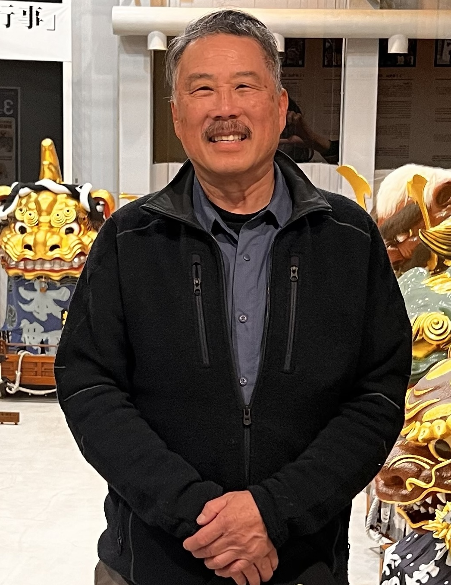

L
In Honored Memory
Melvin Lum
Service
Gallery
Melvin
Lum
Husband
·
Father
·
Fire Captain
·
Friend

May 17, 1954
·
May 7, 2026
01
Memorial Service
A gathering to
honor him
All Are Welcome
Please join us in remembering Melvin.
A memorial service will be held in his honor. Lunch will be provided afterwards.
Date & Time
May 30, 2026 @ 12:00 PM
Place
1275 Harbor Bay Parkway
RSVP
×